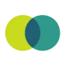

МолекулаАгрегаторы нейросетей
Молекула объединяет модели для текстов, изображений, видео и музыки. В одном аккаунте можно подобрать инструмент под этап работы, сохранить инструкции проекта и использовать готовые роли.
К задаче в МолекулеAI-персонажи: Задайте характер и границы общения. Сравните сохранение контекста, возможность редактировать описание и правила работы с личными данными.
Задайте персонажу привычки речи, знания и границы поведения. Текстовый паспорт помогает выдержать роль в нескольких сценах и заметить реплики, которые выбиваются из образа.
Составь паспорт вымышленной библиотекарши для интерактивной истории. Она любит точные вопросы, знает городские легенды и не раскрывает развязку. Добавь пять характерных реплик.

Молекула объединяет модели для текстов, изображений, видео и музыки. В одном аккаунте можно подобрать инструмент под этап работы, сохранить инструкции проекта и использовать готовые роли.
К задаче в Молекуле
В инструменте «GenTube» можно получать изображения из словесного задания. Ещё одно направление работы: готовить видеоматериалы для публикации.

Instantly.ai используют, чтобы подготавливать письма и сценарии переписки. Ещё одно направление работы: собирать видео с цифровым ведущим.

Pyksel относится к инструментам, которые помогают готовить материалы о товарах и услугах. Ещё одно направление работы: собирать видео с цифровым ведущим.

Quickchat AI предназначен для создания корпоративных диалоговых помощников без программирования. Сервис поддерживает общение на разных языках и ориентирован на вопросы клиентов, продажи, кадровые задачи и сведения о продуктах. Его основная роль состоит в настройке помощника под выбранный рабочий контекст компании.

D-ID создаёт видео с цифровыми ведущими и интерактивными аватарами. Полезен для объяснений и информационных сценариев с заранее согласованным образом и содержанием.

Dust.tt относится к инструментам, которые помогают связывать действия в автоматизированный процесс. Ещё одно направление работы: готовить ответы на обращения клиентов.

В инструменте «FastBots.ai» можно создавать основу сайта или приложения. Ещё одно направление работы: готовить ответы на обращения клиентов.

iWeaver рассчитан на задачи, где нужно сокращать материал до основных положений. Ещё одно направление работы: собирать видео с цифровым ведущим.

Krea помогает разрабатывать визуальный материал с опорой на генерацию и редактирование. Подготовленный референс полезен, когда одного словесного задания недостаточно.
В инструменте «Potis.AI» можно собирать видео с цифровым ведущим. Ещё одно направление работы: подготавливать озвучку текстового материала.

Sogni AI Sticker Bot используют, чтобы получать изображения из словесного задания. Ещё одно направление работы: собирать видео с цифровым ведущим.

В инструменте «Wonder AI» можно получать изображения из словесного задания. Ещё одно направление работы: собирать видео с цифровым ведущим.

Civitai объединяет материалы сообщества для визуальной генерации. Перед применением в проекте стоит изучить назначение модели и условия использования результата.

В инструменте «Cliptalk» можно собирать видеосцену по описанию или визуальному исходнику. Ещё одно направление работы: готовить видеоматериалы для публикации.

Foodpairing используют для задачи: собирать видео с цифровым ведущим. Ещё одно направление работы: готовить ответы на обращения клиентов.

H2O.ai рассчитан на задачи, где нужно готовить текст по теме и требованиям к содержанию. Ещё одно направление работы: подготавливать озвучку текстового материала.

Intellectia AI используют, чтобы разбирать финансовые показатели и рыночные данные. Ещё одно направление работы: собирать видео с цифровым ведущим.

В инструменте «Lucent» можно готовить материалы о товарах и услугах. Ещё одно направление работы: получать изображения из словесного задания.

Pylon используют для задачи: готовить ответы на обращения клиентов. Ещё одно направление работы: собирать видео с цифровым ведущим.

APOB.AI позволяет использовать созданный образ персонажа в последующих визуальных генерациях. Такой подход полезен, когда в разных материалах нужно удерживать узнаваемую внешность.

ArtGeneration.me используют для задачи: получать изображения из словесного задания. Ещё одно направление работы: собирать видео с цифровым ведущим.

FindPrompt рассчитан на задачи, где нужно получать изображения из словесного задания. Ещё одно направление работы: собирать видео с цифровым ведущим.
Freestyle используют для задачи: связывать действия в автоматизированный процесс. Ещё одно направление работы: писать и изменять программный код.

Kajiwoto относится к инструментам, которые помогают собирать видео с цифровым ведущим. Ещё одно направление работы: работать с заданным образом ИИ-персонажа.

В инструменте «Kavout» можно разбирать финансовые показатели и рыночные данные. Ещё одно направление работы: исследовать тему и разбирать найденную информацию.

Lumo используют для задачи: готовить ответы на обращения клиентов. Ещё одно направление работы: собирать видео с цифровым ведущим.

Manus предлагает агентное выполнение задач с несколькими этапами. Пользователь задаёт желаемый результат, а промежуточные действия нужно проверять по мере работы.

Matrix Ai используют для задачи: собирать видео с цифровым ведущим. Ещё одно направление работы: работать с заданным образом ИИ-персонажа.

MindsHub рассчитан на задачи, где нужно связывать действия в автоматизированный процесс. Ещё одно направление работы: собирать видео с цифровым ведущим.

Mira предлагает агентный способ выполнять задачи через Telegram. Перед работой нужно уточнить доступные действия и проверить, как передаются данные для выбранного сценария.

Rendora относится к инструментам, которые помогают готовить трёхмерный объект для проекта. Ещё одно направление работы: собирать видеосцену по описанию или визуальному исходнику.

В инструменте «Bubio.ai» можно собирать видео с цифровым ведущим. Ещё одно направление работы: получать изображения из словесного задания.

CustomGPT.ai используют, чтобы готовить ответы на обращения клиентов. Ещё одно направление работы: собирать видео с цифровым ведущим.

Final Round AI помогает готовить материалы для собеседований и последующего трудоустройства. В наборе предусмотрены работа с резюме, карточки распространённых вопросов и помощь с заданиями по программированию. Продукт также описывает сопровождение интервью, объединяя подготовку ответов с разбором требований новой карьерной роли.
Promethean AI предназначен для задач создания виртуальной 3D-среды. Материалы и объекты нужно оценивать в контексте сцены, куда они будут включены.

SchoolAI используют, чтобы собирать видео с цифровым ведущим. Ещё одно направление работы: готовить учебный материал и объяснения.

Siena AI относится к инструментам, которые помогают связывать действия в автоматизированный процесс. Ещё одно направление работы: готовить ответы на обращения клиентов.

Arena AI предлагает сравнение модельных ответов с участием посетителей. Её собственные результаты голосования относятся к правилам этой площадки и не являются оценками НейроРейтинга.

Craiyon используют, чтобы получать изображения из словесного задания. Ещё одно направление работы: собирать видео с цифровым ведущим.
Find Me A Gift рассчитан на задачи, где нужно собирать видео с цифровым ведущим. Ещё одно направление работы: подбирать настройки и инструкции для модели.

AgentGPT позволяет подготавливать собственных ИИ-агентов и задавать им имя и цель. В описании предусмотрено развёртывание и выполнение задач агентами. Пользователь связывает цель и выбранные задачи при подготовке сценария работы, задавая назначение помощника и рассматривая его последующее выполнение в рамках предоставленных инструментом возможностей.

Magai объединяет ИИ-модели и средства подготовки контента в одном продукте. Среди функций есть транскрибирование видео YouTube, создание изображений и ИИ-персонажи. Совместная работа команды дополняет использование этих инструментов, связывая текстовые и визуальные задачи с обсуждением материалов участниками.

Stammer AI рассчитан на задачи, где нужно связывать действия в автоматизированный процесс. Ещё одно направление работы: готовить ответы на обращения клиентов.

Supercreator рассчитан на задачи, где нужно готовить ответы на обращения клиентов. Ещё одно направление работы: собирать видео с цифровым ведущим.

Tidio соединяет чат с инструментами поддержки. Польза автоматических ответов зависит от актуальности правил и возможности обратиться к человеку.

В инструменте «Abacus.AI» можно готовить ответы на обращения клиентов. Ещё одно направление работы: использовать разные модели через общее рабочее пространство.

Arahi AI относится к инструментам, которые помогают писать и изменять программный код. Ещё одно направление работы: готовить ответы на обращения клиентов.
Страница 1 из 2